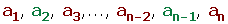
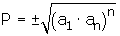

Límites de sucesiones
Límites de sucesiones
Se llama sucesión a un conjunto de números dispuestos uno a continuación de otro.
a1, a2, a3 ,..., an
Los números a1, a2 , a3 , ...; se llaman términos de la sucesión.
El subíndice indica el lugar que el término ocupa en la sucesión.
El término general es an es un criterio que nos permite determinar cualquier término de la sucesión.
Límite de una sucesión
Límite finito
Se dice que una sucesión an tiene por límite L si y sólo si para cualquiera número positivo ε que tomemos, existe un término ak, a partir del cual todos los términos de an, siguientes a ak cumplen que |an−L| < ε.

También podemos definir el límite de una sucesión mediante entornos:
Se dice que una sucesión an tiene por límite L si y sólo si para cualquier entorno de L que tomemos, por pequeño que sea su radio ε, existe un término de la sucesión, a partir del cual, los siguientes términos pertenecen a dicho entorno.
Límite infinito
Se dice que una sucesión an tiene por límite +∞ cuando para toda M>0 existe un término ak, a partir del cual todos los términos de an, siguientes a ak cumplen que an> M.

Se dice que una sucesión an tiene por límite − ∞ cuando para toda N >0 existe un término ak, a partir del cual todos los términos de an, siguientes a ak cumplen que an < −N.

Propiedades de los límites
1. El límite si existe es único.
2. Si una sucesión an tiene límite, todas las subsucesiones tienen el mismmo límite que an.
3. Todas las sucesiones convergentes están acotadas.
4. Hay sucesiones acotadas que no son convergentes.
5. Todas las sucesiones monótonas y acotadas son convergentes.
6. Hay sucesiones convergentes que no son monótonas.
Infinitésimos
Una sucesión an es un infinitésimo si tiene por límite cero.
Propiedades:
1. La suma de dos infinitésimos es un infinitésimo.
2. El producto de un infinitésimo por una sucesión acotada es un infinitésimo.
3. El producto de infinitésimos es un infinitésimo.
4. El producto de una constante por un infinitésimo es un infinitésimo.
5. Si una sucesión an converge a L, la sucesión (an − L) es un infinitésimo.
6. Si una sucesión an es divergente, su inversa es un infinitésimo.
Operaciones con límites
lim (an + bn) = lim (an) + lim (bn)
lim (an − bn) = lim (an) − lim (bn)
lim (an · bn) = lim (an) · lim (bn)
lim k· an =k· lim an
lim ank = (lim an)k
lim loga an = loga lim an
Al aplicarse estas propiedades pueden presentarse estos casos:
Hay que adevertir que las expresiones simbólicas que utilizamos no son exactamente igualdades, puesto que infinito no es número real, sino que es una forma convencional de expresar resultados.
Determinación de una sucesión
Por el término general
an= 2n-1
Por una ley de recurrencia
Los términos se obtienen operando con los anteriores.
Operaciones con sucesiones
Dadas las sucesiones an y bn:
an= a1, a2, a3, ..., an
bn= b1, b2, b3, ..., bn
Suma con sucesiones
(an) + (bn) = (an + bn)
(an) + (bn) = (a1 + b1, a2 + b2, a3 + b3, ..., an + bn)
Propiedades
1. Asociativa:
(an + bn) + cn = an + (bn + c n)
2. Conmutativa:
an + bn = bn + a n
3. Elemento neutro
(0) = (0, 0, 0, ...)
an + 0 = an
4. Sucesión opuesta
(-an) = (-a1, -a2, -a3, ..., -an)
an + (-an) = 0
Diferencia con sucesiones
(an) - (bn) = (an - bn)
(an) - (bn) = (a1 - b1, a2 - b2, a3 - b3, ..., an - bn)
Producto con sucesiones
(an) · (bn) = (an · bn)
(an) · (bn) = (a1 · b1, a2 · b2, a3 · b3, ..., an · bn)
Propiedades
1. Asociativa:
(an · bn) · c n = an · (bn · c n)
2. Conmutativa:
an · bn = bn · a n
3. Elemento neutro
(1) = (1, 1, 1, ..)
an · 1 = an
4. Distributiva respecto a la suma
an · (bn + c n) = an · bn + an · c n
Sucesión inversible
Una sucesión es inversible o invertible si todos sus términos son distintos de cero. Si la sucesión bn es inversible, su inversa es:

Cociente
Sólo es posible el cociente entre dos sucesiones si el denominador es inversible.

Tipos de sucesiones
Sucesiones monótonas

Sucesiones estrictamente crecientes
Se dice que una sucesión es estrictamente creciente si cada término es mayor o igual que el anterior.
an+1 > an
Sucesiones crecientes
Se dice que una sucesión es creciente si cada término es mayor o igual que el anterior.
an+1 ≥ an
Sucesiones estrictamente decrecientes
Se dice que una sucesión es estrictamente decreciente si cada término de la sucesión es menor que el anterior.
an+1 < an
Sucesiones decrecientes
Se dice que una sucesión es estrictamente decreciente si cada término de la sucesión es menor o igual que el anterior.
an+1 ≤ an
Sucesiones constantes
Se dice que una sucesión es constante si todos su términos son iguales, an= k.
an = an+1
Sucesiones acotadas inferiormente
Una sucesión está acotada inferiormente si todos sus términos son mayores o iguales que un cierto número K, que llamaremos cota inferior de la sucesión.
an ≥ k
A la mayor de las cotas inferiores se le llama extremo inferior o ínfimo .
Si el ínfimo de una sucesión es uno de sus términos se le llama mínimo.
Toda sucesión acotada inferiormente es creciente.
Sucesiones acotadas superiormente
Una sucesión está acotada superiormente si todos sus términos son menores o iguales que un cierto número K', que llamaremos cota superior de la sucesión.
an ≤ k'
A la menor de las cotas superiores se le llama extremo superior o supremo.
Si el supremo de una sucesión es uno de sus términos se llama máximo.
Toda sucesión acotada superiormente es monótona decreciente.
Sucesiones acotadas
Una sucesión se dice acotada si está acotada superior e inferiormente. Es decir si hay un número k menor o igual que todos los términos de la sucesión y otro K' mayor o igual que todos los términos de la sucesión. Por lo que todos los términos de la sucesión están comprendidos entre k y K'.
k ≤ an ≤ K'
Sucesiones convergentes
Son las que tienen límite finito.
Sucesiones divergentes
Son las que tienen límite infinito (+∞ ó − ∞).
Sucesiones oscilantes
No son convergentes ni divergentes. Sus términos alternan de mayor a menor o viceversa.
1, 0, 3, 0 ,5, 0, 7, ...
Sucesiones alternadas
Son aquellas que alternan los signos de sus términos.
Progresiones aritméticas
Una progresión aritmética es una sucesión de números tales que cada uno de ellos (salvo el primero) es igual al anterior más un número fijo llamado diferencia que se representa por d.
Término general de una progresión aritmética
1 Si conocemos el 1er término.
an = a1 + (n - 1) · d
2 Si conocemos el valor que ocupa cualquier otro término de la progresión.
an = ak + (n - k) · d
Interpolación de términos
Interpolar medios diferenciales o aritméticos entre dos números, es construir una progresión aritmética que tenga por extremos los números dados.
Sean los extremos a y b, y el número de medios a interpolar m.

Suma de términos equidistantes
Sean ai y aj dos términos equidistantes de los extremos, se cumple que la suma de términos equidistantes es igual a la suma de los extremos.
ai + aj = a1 + an

a3 + an-2 = a2 + an-1 = a1 + an
Suma de n términos consecutivos

Progresiones geométricas
Una progresión geométrica es una sucesión en la que cada término se obtiene multiplicando al anterior una cantidad fija r, llamada razón.

Término general de una progresión geométrica
1 Si conocemos el 1er término.
an = a1 · rn-1
2 Si conocemos el valor que ocupa cualquier otro término de la progresión.
an = ak · rn-k
Interpolación de términos
Interpolar medios geométricos o proporcionales entre dos números, es construir una progresión geométrica que tenga por extremos los números dados.

Suma de n términos consecutivos

Suma de los términos de una progresión geométrica decreciente

Producto de dos términos equidistantes
Sean ai y aj dos términos equidistantes de los extremos, se cumple que el producto de términos equidistantes es igual al producto de los extremos.
ai . aj = a1 . an
a3 · an-2 = a2 · an-1 = ... = a1 · an
Producto de n términos equidistantes

Término general de una sucesión
1. Comprobar si es una progresión aritmética.
2. Comprobar si es una progresión geométrica.
3. Comprobar si los términos son cuadrados perfectos.
También nos podemos encontrar con sucesiones cuyos términos son números próximos a cuadrados perfectos.
4. Si los términos de la sucesión cambian consecutivamente de signo.
Si los términos impares son negativos y los pares positivos: Multiplicamos an por (-1)n.
Si los términos impares son positivos y los pares negativos: Multiplicamos an por (-1)n-1.
5. Si los términos de la sucesión son fraccionarios (no siendo una progresión).
Se calcula el término general del numerador y denominador por separado.
Estudio de las indeterminaciones
Infinito partido infinito
Se dividen todos los sumandos por la potencia de mayor exponente.
Regla práctica
1. Si el numerador y denominador tienen el mismo grado el límite es el cociente entre los coeficientes de las potencias de mayor grado.

2. Si el numerador tiene mayor grado que el denominador el limite es ± ∞, dependiendo del signo del coeficiente de mayor grado.
3. Si el denominador tiene mayor grado el límite es 0.
Infinito menos infinito
1. Sucesión entera.
Se saca factor común de la potencia de mayor exponente.
Regla práctica:
El límite es ± ∞, dependiendo del signo del coeficiente de mayor grado.
2. Sucesiones racionales.
Ponemos a común denominador, y si obtenemos resolvemos la indeterminación.
3. Sucesiones irracionales.
Multiplicamos y dividimos por el conjugado.
Cero por infinito
Se transforma a .
Cero patido por cero

Se transforma a
Uno elevado a infinito
Se resuelve transformando la expresión en una potencia del número e .